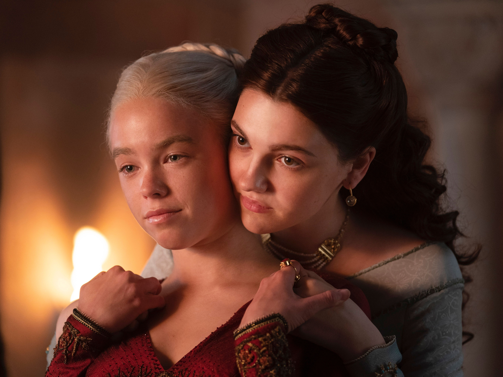
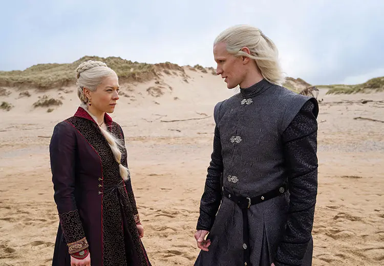
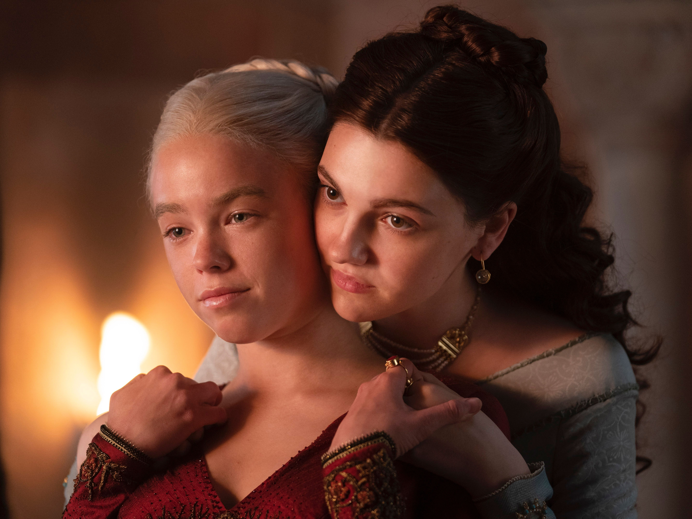
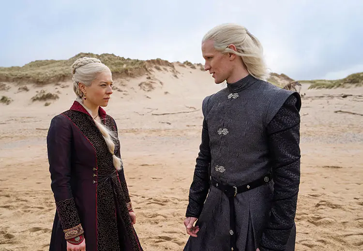

Sobre la serie
Basada en el libro Fuego y Sangre de George R. R. Martin, muestra los conflictos internos de los Targaryen, una familia marcada por el fuego, los dragones y la ambición. La historia gira en torno a la guerra civil conocida como la Danza de los Dragones, una lucha por el trono que cambiará el destino de los Siete Reinos.
 



¿Por qué verla?
- Presenta una historia intensa sobre el poder y la ambición dentro de la familia Targaryen.
- Sus escenas visuales, los dragones y la ambientación medieval son impactantes.
- Cada capítulo mantiene la intriga y la tensión política que caracteriza al universo de Game of Thrones.
- Tiene actuaciones destacadas y una trama que explora la lucha entre el deber y el deseo.
Mira el tráiler oficial
Datos curiosos
- La producción usó más de 10 dragones diferentes, cada uno con su propio diseño y personalidad.
- Fue filmada en España, Inglaterra y Portugal.
- George R. R. Martin participó directamente en la creación de la historia.